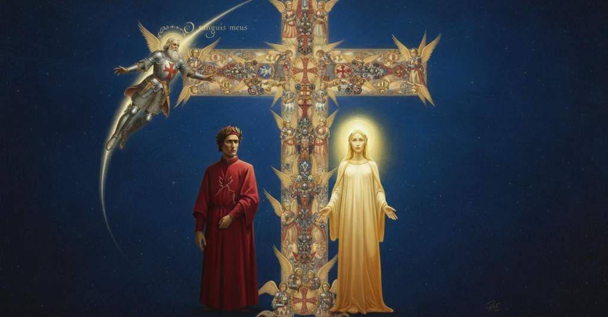

Paradiso — Canto 15

Nel cielo di Marte, Dante incontra l'anima del suo trisavolo Cacciaguida, che lo accoglie affettuosamente, rievoca la Firenze antica e virtuosa in contrasto con quella moderna, e narra la propria vita fino al martirio in Terrasanta. In the Heaven of Mars, Dante meets the soul of his great-great-grandfather Cacciaguida, who affectionately welcomes him, recalls ancient and virtuous Florence in contrast to its modern state, and recounts his life up to his martyrdom in the Holy Land. 火星の天で、ダンテは曽祖父カッチャグイーダの魂に出会い、愛情深く迎えられ、現代とは対照的な古代の徳高きフィレンツェを追想し、聖地での殉教に至るまでの自らの生涯を語る。
1
Benigna volontade in che si liqua
A benign will, in which there melts
慈悲深き意志、その中では
2
sempre l’amor che drittamente spira,
always the love that breathes aright,
正しく吹く愛が常に溶け込む、
3
come cupidità fa ne la iniqua,
as greed does in the iniquitous will,
不正な意志の中で欲望がそうするように、
4
silenzio puose a quella dolce lira,
put silence to that sweet lyre,
その甘美な竪琴を沈黙させ、
5
e fece quïetar le sante corde
and made quiet the holy chords
そして聖なる弦を静まらせた、
6
che la destra del cielo allenta e tira.
that the right hand of heaven loosens and pulls.
天の右手が緩め、そして張る弦を。
7
Come saranno a’ giusti preghi sorde
How will they be deaf to just prayers,
どうして正しき祈りに耳を貸さないことがあろうか
8
quelle sustanze che, per darmi voglia
those substances that, to give me the wish
あの実体たちが、私に願う心を起こさせるために
9
ch’io le pregassi, a tacer fur concorde?
that I should pray to them, were of one accord to be silent?
私が彼らに祈るようにと、声を揃えて黙ったのに？
10
Bene è che sanza termine si doglia
It is right that he grieve without end
果てしなく嘆くがよい
11
chi, per amor di cosa che non duri
who, for love of a thing that does not last
永遠に続かぬものを愛するがために
12
etternalmente, quello amor si spoglia.
eternally, divests himself of that love.
その愛（永遠の愛）を自ら脱ぎ捨てる者は。
13
Quale per li seren tranquilli e puri
As through the tranquil and pure serene skies
穏やかで清らかな夜空を
14
discorre ad ora ad or sùbito foco,
a sudden fire shoots from time to time,
時折、突如として火が走り、
15
movendo li occhi che stavan sicuri,
moving the eyes that were standing secure,
安らかに留まっていた目を動かし、
16
e pare stella che tramuti loco,
and it seems a star that changes place,
そして場所を変える星のように見えるが、
17
se non che da la parte ond’ e’ s’accende
except that from the part whence it is kindled
それが燃え上がった場所からは
18
nulla sen perde, ed esso dura poco:
nothing is lost, and it itself lasts a short while:
何も失われず、そしてそれは束の間しか続かない、
19
tale dal corno che ’n destro si stende
so from the horn that extends to the right
そのように、右に広がる角から
20
a piè di quella croce corse un astro
to the foot of that cross a star ran
その十字架の足元へと一つの星が走った、
21
de la costellazion che lì resplende;
from the constellation that there resplends;
そこに輝く星座の中から。
22
né si partì la gemma dal suo nastro,
nor did the gem depart from its ribbon,
宝石はそのリボンから離れず、
23
ma per la lista radïal trascorse,
but ran along the radial strip,
むしろ光の帯に沿って走り抜けた、
24
che parve foco dietro ad alabastro.
which seemed like fire behind alabaster.
それは雪花石膏の背後の炎のように見えた。
25
Sì pïa l’ombra d’Anchise si porse,
So piously did the shade of Anchises offer himself,
そのように敬虔にアンキセスの影は身を差し出した、
26
se fede merta nostra maggior musa,
if our greatest muse deserves faith,
我らが最も偉大なムーサが信頼に値するならば、
27
quando in Eliso del figlio s’accorse.
when in Elysium he perceived his son.
エリソで息子に気づいた時に。
28
«O sanguis meus, o superinfusa
"O my own blood, O super-infused
「おお、我が血よ、おお、溢れ注がれた
29
gratïa Deï, sicut tibi cui
grace of God, to whom, as to you,
神の恩寵よ、汝のように、誰に
30
bis unquam celi ianüa reclusa?».
has the gate of heaven ever been twice unlocked?"
かつて二度、天の門が開かれたことがあろうか」。
31
Così quel lume: ond’ io m’attesi a lui;
Thus that light spoke: so I attended to him;
そのようにその光は言った。ゆえに私は彼に注意を向けた。
32
poscia rivolsi a la mia donna il viso,
then I turned my face back to my lady,
それから我が貴婦人に顔を向けると、
33
e quinci e quindi stupefatto fui;
and by the one and the other I was stupefied;
こちらでもあちらでも私は驚嘆した。
34
ché dentro a li occhi suoi ardeva un riso
for within her eyes there burned a smile
なぜなら彼女の瞳の中には微笑みが燃えていたからだ、
35
tal, ch’io pensai co’ miei toccar lo fondo
such, that I thought with my own to touch the bottom
そのような微笑みで、私は自らの目で底に触れたと思った、
36
de la mia gloria e del mio paradiso.
of my glory and of my paradise.
私の栄光と私の楽園の底に。
37
Indi, a udire e a veder giocondo,
Then, joyous to hear and to see,
それから、聞くにも見るにも喜ばしく、
38
giunse lo spirto al suo principio cose,
the spirit added things to his beginning,
その魂はその言葉の初めに事柄を付け加えた、
39
ch’io non lo ’ntesi, sì parlò profondo;
that I did not understand them, so profoundly did he speak;
私はそれを理解できなかった、あまりに深く語ったので。
40
né per elezïon mi si nascose,
nor by choice was he hidden from me,
選択によって私から隠されたのではなく、
41
ma per necessità, ché ’l suo concetto
but by necessity, for his concept
むしろ必然によってであった、なぜならその思想が
42
al segno d’i mortal si soprapuose.
surpassed the mark of mortals.
死すべき者の理解の的を超えていたからだ。
43
E quando l’arco de l’ardente affetto
And when the bow of ardent affection
そして燃える情愛の弓が
44
fu sì sfogato, che ’l parlar discese
was so vented that his speech descended
すっかり緩められ、その言葉が
45
inver’ lo segno del nostro intelletto,
toward the mark of our intellect,
我らの知性の的へと下りてきたとき、
46
la prima cosa che per me s’intese,
the first thing that was understood by me,
私が最初に聞き取った言葉は、
47
«Benedetto sia tu», fu, «trino e uno,
was, “Blessed be You, three and one,
「祝福あれ、三位一体にして一なる御身よ」であった、「わが末裔に
48
che nel mio seme se’ tanto cortese!».
who in my seed are so courteous!”
かくも手厚い慈悲を賜る御身に！」。
49
E seguì: «Grato e lontano digiuno,
And he continued: “A pleasing and long fast,
そして続けた。「心地よく、そして長かった断食、
50
tratto leggendo del magno volume
drawn from reading the great volume
白も褐色も決して変わることのない
51
du’ non si muta mai bianco né bruno,
where white nor brown is ever changed,
大いなる書物を読んで得たものを、
52
solvuto hai, figlio, dentro a questo lume
you have fulfilled, my son, within this light
おまえは満たしてくれた、我が子よ、この光の中で、
53
in ch’io ti parlo, mercè di colei
in which I speak to you, thanks to her
私が語りかけるこの中で。かの御方のおかげで、
54
ch’a l’alto volo ti vestì le piume.
who for the high flight clothed you with feathers.
その高き飛翔のためにおまえに羽をまとわせた御方の。
55
Tu credi che a me tuo pensier mei
You believe that to me your thought flows
おまえは思う、おまえの考えが私に流れ込むのは
56
da quel ch’è primo, così come raia
from Him who is First, just as there rays
第一のものからだと。あたかも一を知れば
57
da l’un, se si conosce, il cinque e ’l sei;
from the one, if it is known, the five and the six;
そこから五や六が放射されるように。
58
e però ch’io mi sia e perch’ io paia
and therefore who I am and why I appear
それゆえに、私が何者であるか、なぜ私が
59
più gaudïoso a te, non mi domandi,
more joyous to you, you do not ask,
この喜ばしき群衆の誰よりも
60
che alcun altro in questa turba gaia.
than any other in this happy throng.
おまえに喜んで見えるかを、おまえは問わぬ。
61
Tu credi ’l vero; ché i minori e ’ grandi
You believe the truth; for the lesser and the great
おまえは真実を信じている。なぜなら、この世の
62
di questa vita miran ne lo speglio
of this life gaze into the mirror
小さき者も大いなる者も、かの鏡を覗き込むのだから、
63
in che, prima che pensi, il pensier pandi;
in which, before you think it, you unfold your thought;
そこでは、おまえが思うより先に、その思いが広げられるのだ。
64
ma perché ’l sacro amore in che io veglio
but so that the sacred love in which I watch
だが、私が永遠の眼差しで見守り、
65
con perpetüa vista e che m’asseta
with perpetual sight and which makes me thirst
甘き渇望で私を渇かせる聖なる愛が、
66
di dolce disïar, s’adempia meglio,
with sweet desire, may be better fulfilled,
よりよく満たされるために、
67
la voce tua sicura, balda e lieta
let your voice, secure, bold, and happy,
おまえの確かな、大胆な、喜ばしき声で
68
suoni la volontà, suoni ’l disio,
sound out your will, sound out your desire,
その意志を響かせよ、その願いを響かせよ、
69
a che la mia risposta è già decreta!».
to which my answer is already decreed!”
それに対する私の答えはすでに定められているのだ！」。
70
Io mi volsi a Beatrice, e quella udio
I turned to Beatrice, and she heard
私はベアトリーチェに振り向いた。すると彼女は私が
71
pria ch’io parlassi, e arrisemi un cenno
before I spoke, and smiled a sign to me
話す前にそれを聞き、私に微笑みで合図を送った、
72
che fece crescer l’ali al voler mio.
which made the wings of my volition grow.
それが私の意志の翼を成長させた。
73
Poi cominciai così: «L’affetto e ’l senno,
Then I began thus: “Affection and intellect,
そして私はこう始めた。「情愛と知性は、
74
come la prima equalità v’apparse,
when the First Equality appeared to you,
第一の等しさが御身らに現れるやいなや、
75
d’un peso per ciascun di voi si fenno,
for each of you became of one weight,
御身ら一人一人にとって同じ重さとなりました、
76
però che ’l sol che v’allumò e arse,
because the Sun that illumined and burned you,
なぜなら、御身らを照らし、燃やした太陽は、
77
col caldo e con la luce è sì iguali,
with its heat and with its light is so equal,
その熱と光においてかくも等しいがゆえに、
78
che tutte simiglianze sono scarse.
that all comparisons are inadequate.
いかなる比較も及ばないからです。
79
Ma voglia e argomento ne’ mortali,
But will and argument in mortals,
しかし、意志と表現の術は、定命の者においては、
80
per la cagion ch’a voi è manifesta,
for the reason that is manifest to you,
御身らには明らかな理由によって、
81
diversamente son pennuti in ali;
are feathered differently on their wings;
翼の羽の生え方が異なります。
82
ond’ io, che son mortal, mi sento in questa
whence I, who am a mortal, feel myself in this
それゆえ、定命の者である私は、この
83
disagguaglianza, e però non ringrazio
inequality, and therefore I do not give thanks
不均衡の中にいると感じ、したがって感謝するのは
84
se non col core a la paterna festa.
except with my heart for your paternal welcome.
心をもってのみです、この父祖の歓迎に。
85
Ben supplico io a te, vivo topazio
But I do implore you, living topaz
されど私はあなたに懇願します、この貴き喜びを宝石で飾る、
86
che questa gioia prezïosa ingemmi,
who ingem this precious jewel,
生けるトパジオよ、
87
perché mi facci del tuo nome sazio».
that you may make me satisfied with your name.”
あなたの御名で私を満たしてくださるように」。
88
«O fronda mia in che io compiacemmi
«O my bough in whom I took pleasure
「おお、我が枝よ、そなたを待ちながらも私が喜んでいた、
89
pur aspettando, io fui la tua radice»:
merely by awaiting you, I was your root»:
私がそなたの根であった」：
90
cotal principio, rispondendo, femmi.
such a beginning, in replying, he made for me.
そのような始まりを、答えて、彼は私になした。
91
Poscia mi disse: «Quel da cui si dice
Then he said to me: «The one from whom is named
その後、彼は私に言った、「そなたの家名が由来すると言われる者、
92
tua cognazione e che cent’ anni e piùe
your family and who a hundred years and more
そして百余年も
93
girato ha ’l monte in la prima cornice,
has circled the mountain on the first cornice,
第一の環で山を巡っている者は、
94
mio figlio fu e tuo bisavol fue:
was my son and was your great-grandfather:
我が子であり、そなたの曽祖父であった。
95
ben si convien che la lunga fatica
it is indeed fitting that his long labor
まさしく相応しいことだ、その長い苦役を
96
tu li raccorci con l’opere tue.
you should shorten for him with your good works.
そなたがその行いによって短くしてやるのは。
97
Fiorenza dentro da la cerchia antica,
Florence, within the ancient circle of her walls,
フィレンツェは古い城壁の内側で、
98
ond’ ella toglie ancora e terza e nona,
from which she still takes both her tierce and nones,
そこから今も第三時と第九時を告げる鐘の音を取るが、
99
si stava in pace, sobria e pudica.
abode in peace, sober and chaste.
平和で、質素で、慎ましかった。
100
Non avea catenella, non corona,
She had no necklace, had no coronet,
鎖飾りも、花冠も持たず、
101
non gonne contigiate, non cintura
no embroidered gowns, no girdle
飾り立てた裳裾も、飾り帯もなかった
102
che fosse a veder più che la persona.
that was more to be seen than the person.
人そのものよりも目立つような。
103
Non faceva, nascendo, ancor paura
Not yet did the daughter, at her birth, cause fear
娘が生まれても、まだ父を恐れさせはしなかった、
104
la figlia al padre, che ’l tempo e la dote
for the father, for the age and the dowry
なぜなら時代と持参金が
105
non fuggien quinci e quindi la misura.
did not on this side and that flee the measure.
あちらこちらで度を越すことはなかったからだ。
106
Non avea case di famiglia vòte;
She had no houses empty of family;
一家の家々が空になることもなく、
107
non v’era giunto ancor Sardanapalo
Sardanapalus had not yet arrived there
まだサルダナパロスは来ていなかった
108
a mostrar ciò che ’n camera si puote.
to show what can be done in a chamber.
寝室で何ができるかを示すために。
109
Non era vinto ancora Montemalo
Montemalo was not yet surpassed
まだモンテマロは打ち負かされていなかった
110
dal vostro Uccellatoio, che, com’ è vinto
by your Uccellatoio, which, as it is surpassed
そなたたちのウッチェラトーイオに、それは、登るにつれて打ち負かされたように
111
nel montar sù, così sarà nel calo.
in the rising up, so shall it be in the fall.
下りる時もまたそうなるであろう。
112
Bellincion Berti vid’ io andar cinto
I saw Bellincion Berti go about girt
ベッリンチョン・ベルティが革と骨の帯を締め
113
di cuoio e d’osso, e venir da lo specchio
with leather and bone, and his lady come from the mirror
歩むのを私は見た、そして鏡から来た
114
la donna sua sanza ’l viso dipinto;
with her face unpainted;
彼の妻は、顔に化粧もせず。
115
e vidi quel d’i Nerli e quel del Vecchio
and I saw the lord of the Nerli and of the Vecchio
そしてネルリ家の者とヴェッキオ家の者が
116
esser contenti a la pelle scoperta,
be content with plain-dressed leather,
簡素な皮衣に満足しているのを見た、
117
e le sue donne al fuso e al pennecchio.
and their ladies at the spindle and the distaff.
そしてその妻たちは糸紡ぎ竿と巻き糸玉に向かっていた。
118
Oh fortunate! ciascuna era certa
Oh fortunate women! Each one was certain
おお、幸いなる女たちよ！ 各々が確信していた
119
de la sua sepultura, e ancor nulla
of her own burial place, and none as yet
自らの墓所を、そしてまだ誰も
120
era per Francia nel letto diserta.
was deserted in her bed because of France.
フランスのために寝床に見捨てられてはいなかった。
121
L’una vegghiava a studio de la culla,
One would keep watch in caring for the cradle,
一人は揺り籠の世話に夜を明かし、
122
e, consolando, usava l’idïoma
and, consoling, would use the speech
そして、慰めながら、言葉を使っていた
123
che prima i padri e le madri trastulla;
that first delights fathers and mothers;
最初に父や母たちを楽しませる言葉を。
124
l’altra, traendo a la rocca la chioma,
another, drawing the threads from the distaff,
もう一人は、糸繰り棒から繊維を引き出しながら、
125
favoleggiava con la sua famiglia
would tell tales with her family
家族と共に物語を語っていた
126
d’i Troiani, di Fiesole e di Roma.
of the Trojans, of Fiesole, and of Rome.
トロイア人、フィエーゾレ、そしてローマの。
127
Saria tenuta allor tal maraviglia
Such a marvel would have been held then
その頃には驚異と見なされたであろう
128
una Cianghella, un Lapo Salterello,
a Cianghella, a Lapo Salterello,
一人のチャンゲッラ、一人のラーポ・サルタレッロは、
129
qual or saria Cincinnato e Corniglia.
as Cincinnatus or Cornelia would be now.
今そうであるだろうキンキナトゥスやコルネリアのように。
130
A così riposato, a così bello
To so restful, to so beautiful
かくも安らかで、かくも美しい
131
viver di cittadini, a così fida
a life of citizens, to so faithful
市民の暮らしに、かくも忠実な
132
cittadinanza, a così dolce ostello,
a citizenry, to so sweet a dwelling,
市民社会に、かくも心地よい住処に、
133
Maria mi diè, chiamata in alte grida;
Mary gave me, called upon in high cries;
マリアは私を授けた、高らかな叫びで呼ばれて。
134
e ne l’antico vostro Batisteo
and in your ancient Baptistery
そしてお前たちの古い洗礼堂で
135
insieme fui cristiano e Cacciaguida.
at once I became Christian and Cacciaguida.
私はキリスト教徒となると共にカッチャグイーダとなった。
136
Moronto fu mio frate ed Eliseo;
Moronto was my brother and Eliseo;
モロントとエリゼオは私の兄弟であった。
137
mia donna venne a me di val di Pado,
my lady came to me from the Po valley,
我が妻はポーの谷から私のもとに来て、
138
e quindi il sopranome tuo si feo.
and from there your surname was made.
そこからお前の姓は生まれたのだ。
139
Poi seguitai lo ’mperador Currado;
Then I followed the Emperor Conrad;
その後、私は皇帝コンラートに従った。
140
ed el mi cinse de la sua milizia,
and he girded me with his knighthood,
そして彼は私に自らの騎士の帯を授けた、
141
tanto per bene ovrar li venni in grado.
so much through good work did I come into his favor.
善き働きによって、それほどまでに私は彼に気に入られたのだ。
142
Dietro li andai incontro a la nequizia
Behind him I went to meet the iniquity
彼に従い、私はあの邪悪な法に立ち向かった
143
di quella legge il cui popolo usurpa,
of that law whose people usurp,
その民は、牧者たちの罪により、
144
per colpa d’i pastor, vostra giustizia.
through the fault of the shepherds, your justice.
お前たちの正義の地を奪っている。
145
Quivi fu’ io da quella gente turpa
There was I by that foul folk
そこで私は、かの卑劣な民によって
146
disviluppato dal mondo fallace,
unwrapped from the fallacious world,
偽りの世から解き放たれた、
147
lo cui amor molt’ anime deturpa;
the love of which defiles many souls;
その世への愛は多くの魂を汚すものだが。
148
e venni dal martiro a questa pace».
and I came from martyrdom to this peace.”
そして殉教を経て、この安らぎへと至ったのだ」。